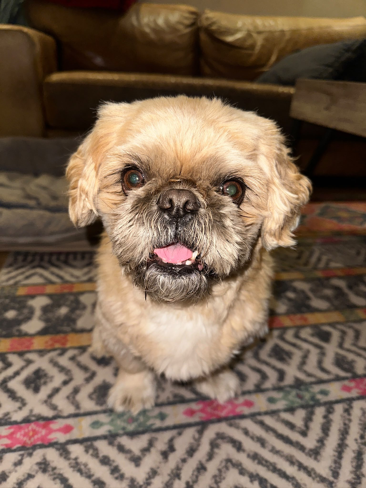

Maya Naor

Summary
I am a third-year Information Systems Management student at
Ben-Gurion University of the Negev, with a strong interest in
technology, data analysis, and business information systems.
Education
-
Bachelor's Degree in Information Systems Management
Ben-Gurion University of the Negev
2024 - Present (Third-Year Student)
-
High School Diploma
Harel High School
Completed 12 years of schooling
Work Experience
-
Customer Care & Operations Specialist - Air Doctor
Current Position
-
Coordinate medical appointments between patients,
clinics, and healthcare providers worldwide.
-
Manage customer inquiries and resolve complex
operational issues.
-
Communicate with international teams and medical
professionals.
-
Handle multiple tasks simultaneously in a
fast-paced work environment.
-
Maintain accurate documentation and follow up
on customer requests.
-
Support daily operational processes and improve
service efficiency.
Skills
-
Programming Languages:
Java, HTML
-
Databases:
SQL, Database Design, Relational Databases, ERD
-
Software Development:
Object-Oriented Programming (OOP),
Data Structures, Algorithms
-
Systems Analysis:
UML Diagrams, Requirements Analysis,
Business Process Modeling
-
Technical Skills:
Data Analysis, Logical Thinking,
Problem Solving
-
Soft Skills:
Teamwork, Communication, Time Management,
Adaptability, Multitasking
-
Languages:
Hebrew, English
Other